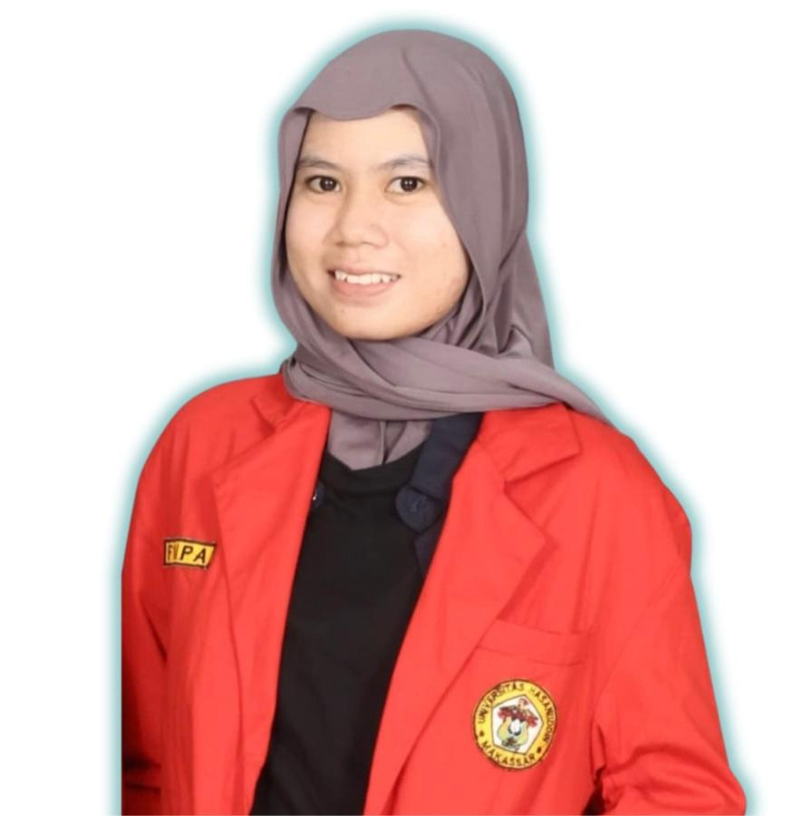

Elviana

Biodata
Tempat, Tanggal Lahir: Tono, 05 Desember 2004
Jenis Kelamin: Perempuan
Agama: Islam
Email: eaelviana@gmail.com
No. WA: 085244044389
Alamat: Jl. Towerkanjovank Lr.9 No.1 Tamalanrea Indah
Ringkasan
Saya adalah mahasiswi Fisika yang berdedikasi, aktif berorganisasi, dan memiliki minat pada komputasi
serta fisika. Memiliki keterampilan komunikasi, kepemimpinan, dan manajemen waktu yang baik.
Pendidikan
- S1 Fisika, Universitas Hasanuddin (2023 – Sekarang)
- SMAN 24 Bone (2020 – 2023)
- SMPN 1 Dua Boccoe (2017 – 2020)
- SD Inpres 5/81 Pattiro (2011 - 2017)
Pengalaman Organisasi
- PMII Komisariat Universitas Hasanuddin (2023 – Sekarang)
- UKM Seni Tari Universitas Hasanuddin (2023 – Sekarang)
- HIMAFI FMIPA Universitas Hasanuddin (2023 – Sekarang)
- MPK SMAN 24 Bone (2022 – 2023)
- Koordinator Divisi Seni Islam ROHIS SMAN 24 Bone (2021 – 2022)
- Provos Putri PKS SMAN 24 Bone (2021 – 2022)
- Sekretaris OSIS SMAN 24 Bone (2021 – 2022)
Keahlian
- Public Speaking & Leadership ⭐⭐⭐⭐
- Microsoft Office ⭐⭐⭐⭐
Hobi & Minat